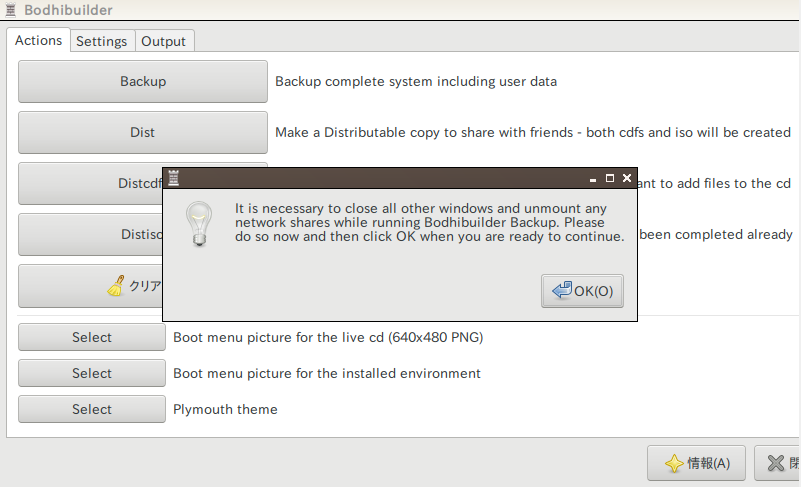

ISO作成について
いよいよISOを作成していきます
ISO作成には『BodhiBuilder』というフリーソフトを使用していきます
ですが、このソフト実はバグがあり正常にISOを作成することができません
このサイトはそのバグ回避の解説を行っている唯一のサイトです
Basixに付属しているBodhiBuilderを削除する
Basixに付属しているBodhiBuilderは少しバージョンが違い、正常に動作しない可能性があるので削除します
以下のコマンドで簡単に削除できます
$ sudo apt-get -y purge bodhibuilder$ sudo apt-get -y auoremoveSereneLinuxのリポジトリからBodhiBuilderをインストールする
こちらのリンクからSereneLinux用のBodhiBuilderをダウンロードしてください
その後、何らかの方法でインストールを行って下さい（dpkgやapt、gdebiなど）
BodhiBuilderを実行してISOを作成する
いよいよスクリプトを走らせます
ターミナルエミュレーターを起動して以下のコマンドで起動します
$ gksu bodhibuilder-gtk「OK」をクリックします

「Settings」タブに移動して、それぞれの項目を入力します
「Username」には、インストール時と同じ名前を入力してください
「CD Label」では、32文字以内で入力してください
それ以上はエラーになります
「Squashfs options」には「-no-recovery -always-use-fragments -b 1M -no-duplicates」と入力してください
（筆者もこれの意味はわかっていませんがBasixではこのオプションがつけられていたらしいです）
あとは自由で構いません
設定が終わったら、「Actions」タブに戻って「Dist」ボタンをクリックし、ISO作成を開始します
すると、Outputタブへ自動で移動し、いろいろログが出力されます
ISO作成が終わるとまたダイアログが出るので、それまで待ちます
作成中はCPUをたくさん使用するので注意してください
作成したISOの場所
作成が終わったら、ISOを確認しましょう
初期設定のままなら下のパスに保存されています
/home/bodhibuilder/bodhibuilderこのパスの中に.isoや.md5、.sha256などがあるはずです
この3つのファイルを配布するので、クラウドサービスなどを使うなり共有フォルダを使うなりしてホスト環境（仮想マシンの外）に持ってきておいてください
起動チェック
ISOが起動するか確かめましょう
最初に準備した実験用DVD-RWにISOを書き込んで実機で実験するか、仮想マシンで動作させます
準備編 の「仮想環境にBasixをインストールする」と同じ方法で仮想マシンにインストールします
自分の思ったとおりのインストールスライドや、アイコン、テーマになっていれば成功です
うまくできなかったら、 カスタマイズ編 で確認するか、私のTwitter（ トップページ ）の私のTwitterのDMに来てください
配布編へ続く
自分用のISOを作った人はこれで終わりですね。お疲れ様でした
配布するためのOSを作った人は一番最後の「OSを配布する」という作業が残っています^^;
それでは、また次回。